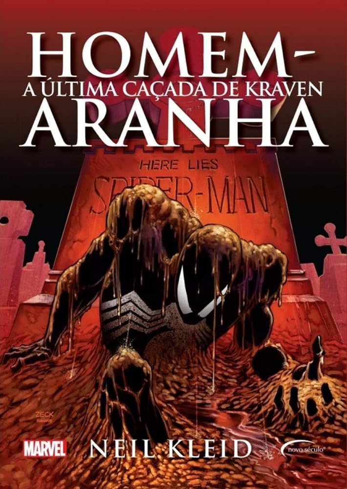
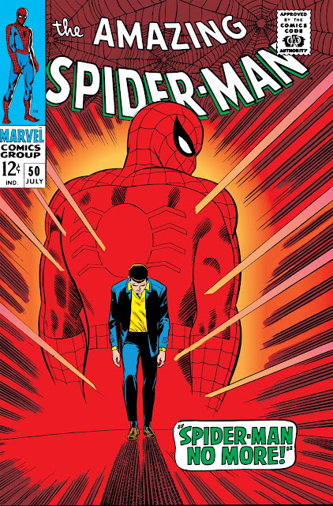
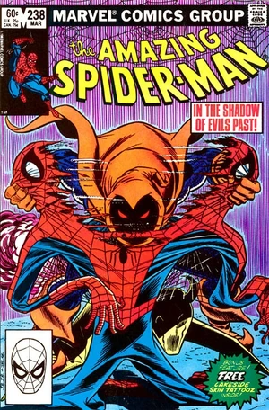
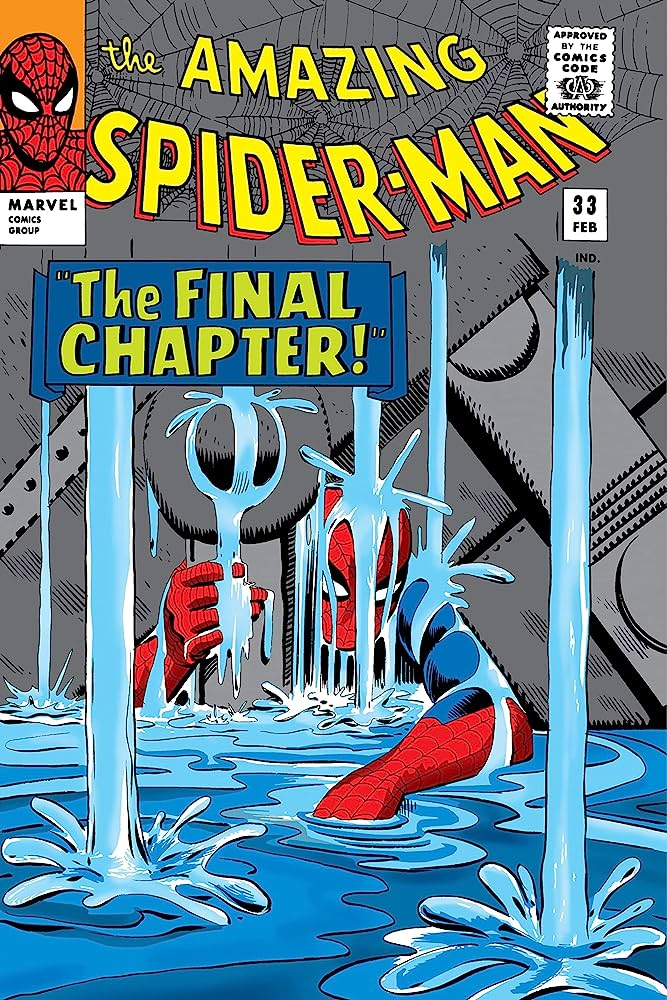

Quem é o Homem-Aranha?
Às vezes estudante, às vezes cientista e às vezes fotógrafo, Peter Parker é um super herói em tempo integral mais conhecido como o Homem-Aranha, que se arrasta pela teia e pela parede. Como uma criança órfã, Peter foi criado por seu tio Ben e sua tia May. Em uma exposição científica, Peter foi mordido por uma errante aranha radioativa que lhe concedeu uma série de poderes aracnídeos. Inicialmente ele se tornou o Homem-Aranha para usar seus poderes como animador, crescendo tão convencido que não se preocupou em parar um transeunte ladrão. Em uma reviravolta do destino, o mesmo ladrão acabou matando o tio Ben de Peter, levando-o a perceber que precisava usar seus poderes de forma responsável. A partir daí, o Homem-Aranha tornou-se um vigilante combatente do crime.
Amazing Fantasy #15
O Homem-Aranha, o alter ego de Peter Parker, é um super-herói das revistas em quadrinhos publicadas pela Marvel Comics. Criado pelo escritor/editor Stan Lee e pelo escritor/artista Steve Ditko, o Homem-Aranha surgiu em Amazing Fantasy #15, durante a Era de Prata dos Quadrinhos.
Muitas vezes um solitário, o Homem-Aranha é um membro robusto da comunidade de super-heróis que ganhou numerosos aliados como o Quarteto Fantástico e os Vingadores. Ele fez de numerosos supervilões seus inimigos pessoais, incluindo o Doutor Octopus, o Electro, Kraven, o Caçador, o Mystério, o Venom, e mais notoriamente, seu nêmesis o Duende Verde, que uma vez matou a namorada de Peter, Gwen Stacy. A rede de apoio de Peter se estende a sua vida civil, incluindo Mary Jane Watson, Harry Osborn, Flash Thompson e J. Jonah Jameson, embora este último costumava fazer uma campanha de difamação contra o rastejador de parede em seu jornal, o Clarim Diário.
Histórias mais marcantes:


- Última Caçada de Kraven
A história foi muito interessante, pela narrativa de suspense de J.M. DeMatteis, com desenhos de Mike Zeck, que usou bastante sequências silenciosas e cinematográficas, em traços mais realistas ; e pelo fato de mostrar, pela primeira vez, que o Homem-Aranha talvez consiga vencer a própria morte. A perspectiva da trama sob o olhar de Kraven também foi um bônus e o formato de publicação, que pode ser considerado premium para revistas de linha, espalhou-se por dois meses nos três títulos mensais do Aracnídeo na época (The Amazing Spider-Man, The Spetacular Spider-Man e Web of Spider-Man). O resultado foi primoroso e, até hoje, é uma das mais aclamadas histórias do Escalador de Paredes de todos os tempos.

- Homem-Aranha nunca mais!
A capa de Amazing Spider-Man #50 (1967) é uma das mais famosas e esta edição, em especial, teve influência direta em Homem-Aranha 2 (2004), de Sam Raimi. Assim como apareceu nas telonas, Peter Parker um dia decide que a vida de herói não é mais para ele, abandonando o uniforme do Escalador de Paredes em uma lata de lixo em um beco escuro de Nova York. Mais uma vez, a trama nos ensina que o altruísmo de Peter Parker é inabalável: é o que o faz, novamente, vestir o traje do Amigo da Vizinhança, não importa quais consequências isso possa trazer para sua vida pessoal.

- A saga do Duende Macabro
Todo mundo se lembra mais do Duende Verde, mas o Duende Macabro original também deu muito trabalho para o Homem-Aranha. Como já estava ficando chato explorar somente Norman Osborn, o escritor Roger Stern decidiu criar uma versão diferente em Amazing Spider-Man #249 (1984): em vez do caos do Duende Verde, o Duende Macabro era frio e calculista. O texto de Stern criou um grande mistério sobre a verdadeira identidade do vilão e a grande diversão dos leitores, na época, era tentar adivinhar quem seria o Duende Macabro. Pelo menos três pessoas eram muito suspeitas e a revelação até mesmo foi alterada, para aumentar o suspense. No final, ficamos sabendo que Roderick Kingsley é que vinha apavorando a população.

- A Saga do Planejador Mestre
Este é um conto clássico, que estabelece o mito do Homem-Aranha, que, não importa o quanto apanhe da vida, sempre vai arrancar forças improváveis em seu caráter, suas responsabilidades e sua fé inabalável na justiça e altruísmo. As cenas dessa revista são tão icônicas que foram reproduzidas algumas vezes nas telonas e nas telinhas: em Homem-Aranha: De Volta ao Lar (2017), por exemplo, há uma sequência que reproduz as páginas dos quadrinhos. Peter está derrotado, sob escombros, e parece não ter forças mais para se levantar. Eis que ele diz: "Qualquer um pode vencer uma luta quando as chances estão favoráveis! É quando as coisas estão difíceis, quando parece não haver chance, é o que importa!", antes de se colocar de pé, uma vez mais. Este é o Homem-Aranha que o povo gosta.